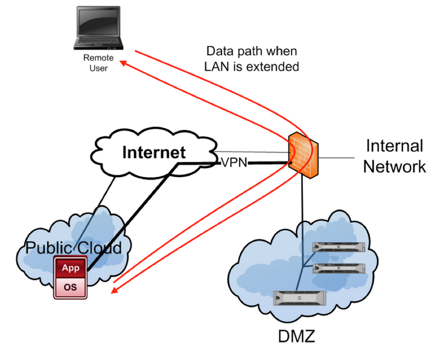

IaaS Targeting
One of the most difficult aspects of penetration testing an IaaS environment is determining target IP information. Remember that a cloud is typically shared space, so you cannot count on a tenant's IP address range as being continuous. In fact if they frequently bring servers up and down, it is not uncommon for the allocated IP addresses to change.
This is where things can get a bit tricky. If you are targeting a private IaaS deployment, determine whether the entire IP range is in scope. While IP addresses are usually only revealed during white box testing, exceptions can be made to ensure uninvolved third parties do not receive collateral probing. If the contracting organization has servers in public IaaS space, you may be able to enumerate their location via DNS by identifying IP ranges that are part of known hosting providers.
Another common trick is to tie the public server back to the local LAN via a VPN. This technique is shown in Figure 2. While this nullifies many of the benefits of public cloud such as geo-location services and load balancing, it does permit the organization to use their existing perimeter security to reduce the risks against the server in public space. The public cloud server is configured such that it will only communicate down the VPN tunnel.

Remember that the public cloud is a virtual environment. So while extending the LAN may protect the publically hosted server at the network level, the VM is still connected to a hypervisor and a VSwitch via software. So it may be possible to come at the VM from another vector besides the network. However this type of testing would require that the attack be directed against layers managed by the cloud provider, which could put them out of scope if you have been contracted by a tenant.